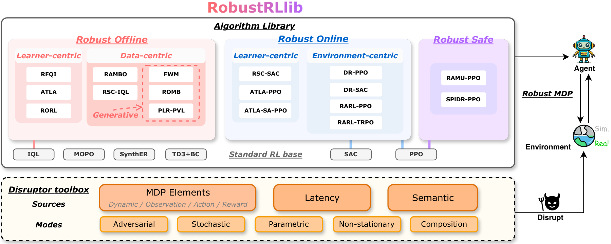

RobustRLlib: a library for robust reinforcement learning¶
Robust reinforcement learning is critical for reliable real-world deployment, where policies may fail under diverse shifts and disruptions. RobustRLlib is an algorithm-centric library and benchmark. It integrates 16 representative robust online, offline and safe RL methods and 6 standard algorithms under a unified interface, together with a toolbox that declares deployment shifts and one evaluation protocol for all methods.

The overview of RobustRLlib.
First time here?¶
- Overview
- What the library covers, how the algorithms are organised, and how it compares with related benchmarks.
- Quick Start
- Install the library, build a first shifted environment, train a first method and evaluate it.
Algorithms¶
- All Methods
- The 22 algorithms of the library in one table.
- Standard Algorithms
- The base learners and references: IQL, TD3+BC, MOPO, SynthER, PPO, SAC.
- Robust Online Algorithms
- ATLA, ATLA-SA, RSC, RARL-T, RARL-P, DR.
- Robust Offline Algorithms
- RFQI, RORL, ATLA-IQL, RSC-IQL, RAMBO, ROMB, FWM, PLR-PVL.
- Robust Safe Algorithms
- RAMU, SPiDR.
- Train an algorithm
- The configuration files, the launch commands and the run directory.
- Add a new algorithm
- Implement the algorithm interface and register a method of your own.
Shift sources and modes¶
- Overview
- How a shift is declared, and which shift sources accept which modes.
- Shift sources
- Dynamic shift, Observation shift, Action shift, Reward/cost shift, Latency shift, Semantic shift.
- Shift modes
- Stochastic, Adversarial, Parametric, Non-stationary, Composition.
- Add a physics simulation
- Carry the shifts to a simulator of your own.
Evaluation¶
- Evaluation Protocol
- Evaluate a frozen checkpoint on a perturbation grid and report the result.